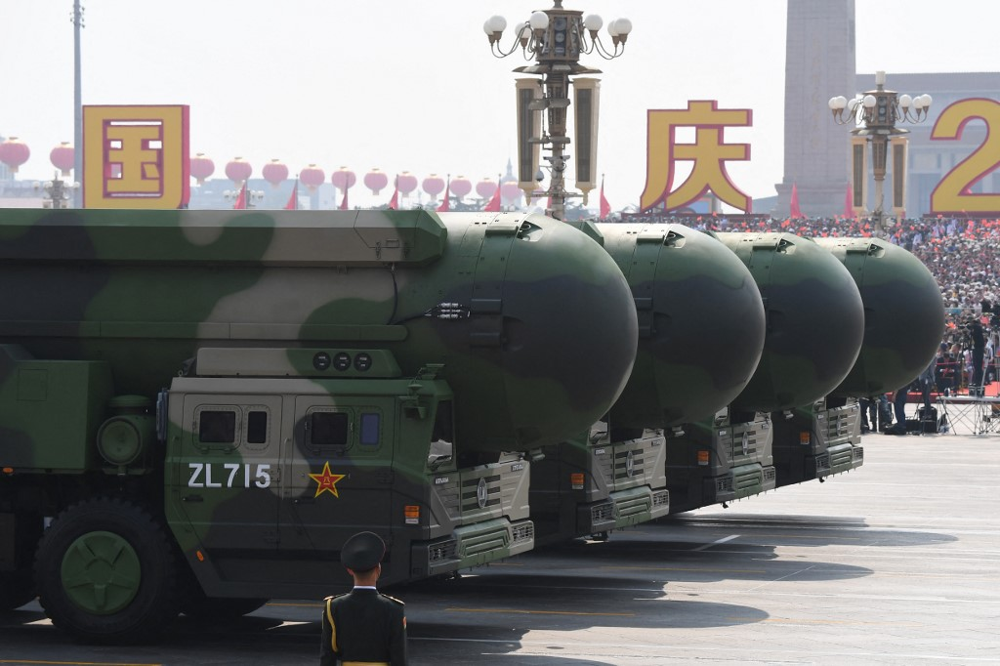

China expands nuclear arsenal as global tensions grow: study
Image Credits https://www.thejakartapost.com/world/2023/06/12/china-expands-nuclear-arsenal-as-global-tensions-grow-study.html
It was a hot summer day in August 1945 when the United States dropped atomic bombs, codenamed "Little Boy" and "Fat Man," on the Japanese cities of Hiroshima and Nagasaki, respectively. The explosions killed an estimated 200,000 people and marked the beginning of the world's nuclear arms race.
Fast forward to the present day, and we are once again witnessing a rise in global tensions as countries such as China expand their nuclear arsenals, according to a new study by the Stockholm International Peace Research Institute (SIPRI).
Case Studies
China
China has been steadily increasing its nuclear arsenal in recent years, with an estimated 350 warheads as of January 2021, according to the SIPRI report. This is a significant increase from the 290 warheads China had in 2019.
China's growing nuclear capabilities have raised concerns among other countries in the region, particularly Japan and South Korea. "China's expanding nuclear arsenal is a cause for concern and poses a threat to regional security," said Japanese Defense Minister Nobuo Kishi.
North Korea
North Korea has long been a source of concern for the international community due to its nuclear weapons program. The country is estimated to have between 30 and 40 nuclear warheads, according to the SIPRI report.
North Korea has repeatedly conducted nuclear and missile tests over the years, which have led to increased tensions with the United States and South Korea.
United States
The United States remains the country with the largest nuclear arsenal, with an estimated 5,550 warheads as of January 2021, according to the SIPRI report. However, the country has been reducing its nuclear arsenal in recent years under the New START treaty with Russia.
Despite these reductions, the United States still retains a significant nuclear arsenal and has been investing in modernizing its nuclear weapons systems.
Conclusion
- The declining trend of nuclear weapons worldwide may have come to an end, according to the SIPRI report.
- China's expanding nuclear arsenal poses a threat to regional security and has raised concerns among neighboring countries.
- The international community must work together to reduce the risk of a nuclear arms race and prevent the use of nuclear weapons.
Curated by Team Akash.Mittal.Blog
Share on Twitter Share on LinkedIn